Final Exam, Spring 1997
Take Home Due: 12 noon, Friday, 9 May, 1997.
This is to be all your own work. You may use any result from class,
homeworks, or the books and papers on reserve in the library.
Do not consult anybody or anything else.
I can dispense hints to help you if you are stuck.
My phone numbers are 276-6915(O) and 346-2811(H).
You can also reach me by email at mitchj@rpi.edu.
I will have office hours each Thursday from 2-5pm.
I will be out of town between Friday, 2 May and Wednesday, 7 May,
inclusive.
The exam consists of four questions and is worth 100 points.
In order that I can display grades, please write a 4 digit number
on the front of your solution set.
- 1.
- (25 points)
Consider the complete undirected graph G=(V,E) on n vertices.
A travelling salesman tour on this graph
can be described as a collection of edges
T such that the graph G'=(V,T) is connected,
T contains n edges, and each vertex is adjacent to two edges.
Let ce be the cost of edge e in E.
The travelling salesman problem is to find the minimum weight tour,
that is
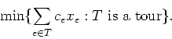
Let 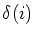
denote the edges which are incident to vertex i.
- (a)
- (10 points)
Verify that the following problem is a Lagrangian
relaxation of the travelling salesman problem:
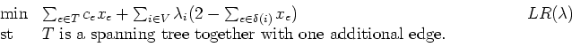
- (b)
- (5 points)
What would it imply if the optimal solution to 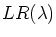
was a tour?
- (c)
- (10 points)
Solve
for the graph with edge lengths as in
the following table,
with vertex weights 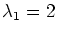,
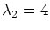,
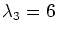,
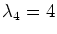,
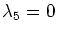,
and 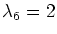.
(You may assume that the solution to a problem of the form
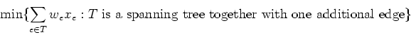
is obtained by finding the minimum weight spanning tree and then
adding in the remaining shortest edge.)
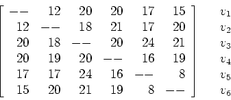
- 2.
- (25 points; each part is worth 5 points.)
Given the complete graph Kn=:(V,E) on n vertices
and edge weights we on the edges, a clustering
of the vertices is obtained by choosing an integer p
and a partition of the vertices into p sets
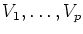
satisfying:
The incidence vector of this clustering is defined by
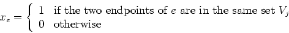
The clustering problem for this set of edge weights is then
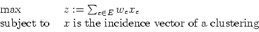
The edge weights we can be positive or negative.
If all the edge weights are positive, the optimal solution
is to set p=1 and put all the vertices in one set,
giving a value
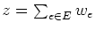.
If all the edge weights are negative, the optimal solution is
to set p=n and put each vertex in its own set,
giving a value z=0.
The weights we measure a ``distance'' between two vertices:
the larger this value, the more likely the vertices should be
in the same subset Vj, and if we is very negative,
the vertices will probably be in different sets in the optimal
solution.
Let Q be the set of incidence vectors of clusterings
for Kn.
- (a)
- Show that the dimension of Q is n(n-1)/2, ie, Q
is full dimensional.
- (b)
- Show that the inequality
is valid for any point in Q.
- (c)
- Show that inequality
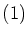
defines
a facet of the convex hull of Q.
- (d)
- Take n=4.
Choose edge weights we so that
the optimal solution to the following relaxation of the
clustering problem is not in the convex hull of Q:
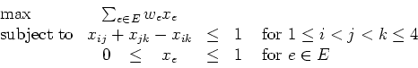
- (e)
- Find a valid inequality that cuts off the point you found in
part (2d).
- 3.
- (25 points)
Consider the travelling salesman problem (TSP) on the complete
undirected graph. Let X be an instance of the travelling salesman
problem, let OPT(X) be the optimal value of this instance, and
let A be a polynomial time algorithm for the TSP which finds a
tour of length A(X). We know that (unless
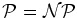)
algorithm A will not find the optimal solution to every instance X.
Let r be a given constant,
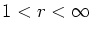.
Show that we can not even guarantee
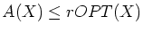,
unless
.
If the edge lengths cij satisfy the triangle inequality
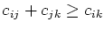
for every three vertices i, j,
and k then Christofides Heuristic generates a tour that is
guaranteed to be no more than 1.5 OPT(X).
How does your earlier proof break down if the edge lengths
must satisfy the triangle inequality?
- 4.
- (25 points)
Consider the mixed integer programming problem (MIP):
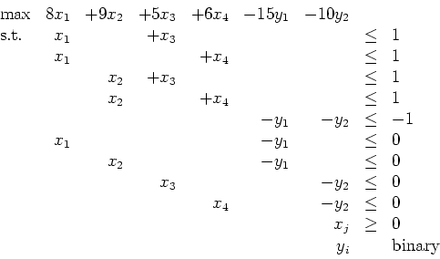
Solve this problem using Bender's decomposition.
(Take the problem
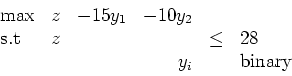
as the initial relaxation (RMP).)
John E. Mitchell
2005-12-09